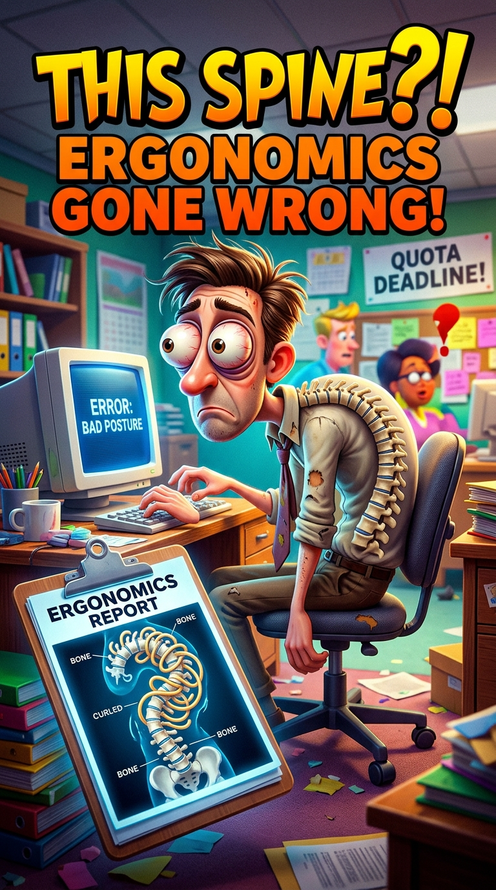

🎬 Player & Video Recording Controls
EXPORT AS HIGH-RES VIDEO
00:00
● Ready to render 1080x1920 60FPS video
Records internal canvas stream with synchronized audio track. Compatible with YouTube Shorts, TikTok, and Instagram Reels.
TIMELINE SCRUBBER
0.0s / 17.5s


AI 9:16 Shorts Thumbnail
High-CTR 3D Caricature artwork with question-mark spinal X-ray.
📄 View Full Production Kit & Prompts →